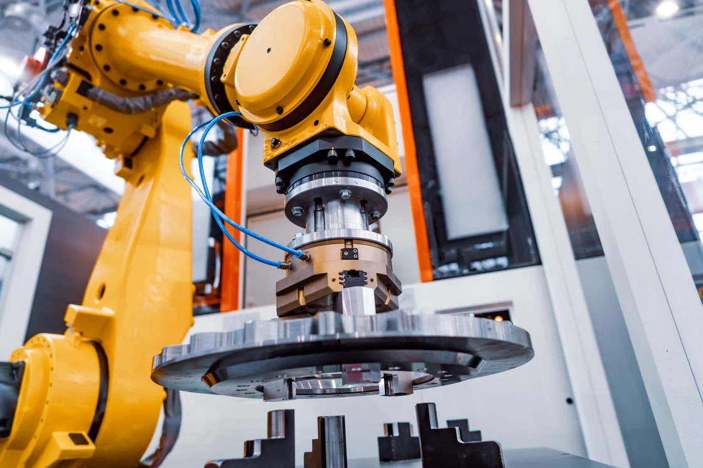

I don't think it is unfair to remark that there exists, presently, a generalized and atavistic way to look at the progress of automation and how it has and will affect the labour market, particularly the areas it will have a greater impact on.
Part of the issue is that people are drawned to the big and obvious semantic signifiers: humanoid robots and large mechanical arms in assembly lines. This leads them predicting the end of manual or low-paid service jobs, to be replaced by an army of bipedal androids or something similar in scope, on one hand, while on the other re-affirming the permanence (or higher resistance) of office (read white-collar) jobs.
That analysis is wrong. I have a contrary thesis. In many ways those jobs are not safe at all; worse still, they may be even in more jeopardy than others. The word automation should also bring to bear a security camera with an image recognition algorithm behind it, a payroll processing software, an Excel spreadsheet, a stock-trading virtual bot, etc...
Computers are good at processing data Therefore jobs that are only focused on processing data are more in danger than the others. Jobs that require the motion of atoms in addition to the motion of bits will prove to be trickier to automate.
Putting it another way: the advantages humans have over AI and Neural Networks is not some special "creativity" that the elect few posses. It is more how efficent our bodies are at navigating space.
A third way to put this is that CPUs are cheap, physical actuators are expensive. The algos may be complex but they only need to be discovered once -- after that, replicating them x1000 is trivial and cost-effective.
The notion of "easy to automate physical task" versus a "hard to automate mental task" is, I believe, somewhat misguided. It is actually easier to replace pure symbolic analysis tasks than any physical ones. I reaffirm: the cost of a physical actuator will probably be greater than the cost of CPU cycles (which trends towards the dirt cheap specially with charge on-use only policies provided by cloud computing providers). The costs saved in automating a paper-pushing office job are also greater than the ones saved by automating someone who is stacking shelves at the local supermarket, making it more of a priority for firms hoping to get efficiency gains and increase margins.
So is the range of automation. This is also, I believe, due to a failure of imagination. Usually, one imagines that the only possible way to automate a job is to find a machine that can do the exact same thing, step-by-step, as it exists today -- imagining that a robot doctor must also walk around with a white coat and a stethoscope -- whereas in reality machines and software can solve tasks in novel ways that don't require human intervention or greatly increase the capacity of a single person while displacing ten times more. A doctor may be replaced by wearable devices that hook up to servers that store and process health data, giving back advice on dietary and exercise habits, diagnostic information and even disease detection. Some human supervision may be initially required and this last step may be very, very hard to fully automate but while I expected it to be quite difficult to automate all the doctors or all the lawyers in the world, it may prove to be relatively easy to automate 80% to 90% of all doctors and lawyers in the world.
As an side note, several fields are already evolving towards a type of winner-take all market -- think pop-stars or chefs -- and most professional employment will follow those trends. Google may still have software engineers, but it may need only 10 super productive ones taking 1 million USD in TC, leveraging all sorts of software-generating ML/AI solutions instead of 100 taking 200k. Spin up an instance on AWS that runs the work of a small battalion of big law firm clerks and the top attorneys can handle even big mergers without needing to hire more people. Cheap CPU power allied with Deep Learning models can quickly become economically more viable that high wages for highly specialized work. Specially since those models can themselves be trained and tuned to specific fields.
Further still, all the demand for services that is created by the office works running around urban downtown's all day will fall, given that there will be less office workers to demand them, tanking low skilled service jobs with them.
It might be that slightly skilled manual labor will be the last job class to be wiped out.
What remains? Ownership, of course. The only hedge against automation is CAPITAL OWNERSHIP i.e. owning the companies that have their productivity skyrocket. Seek equity, not cash.
It's way better to be the guy paying some other guy to automate a million jobs than to be the guy being payed to automate the jobs. Because, eventually, his time will come too.